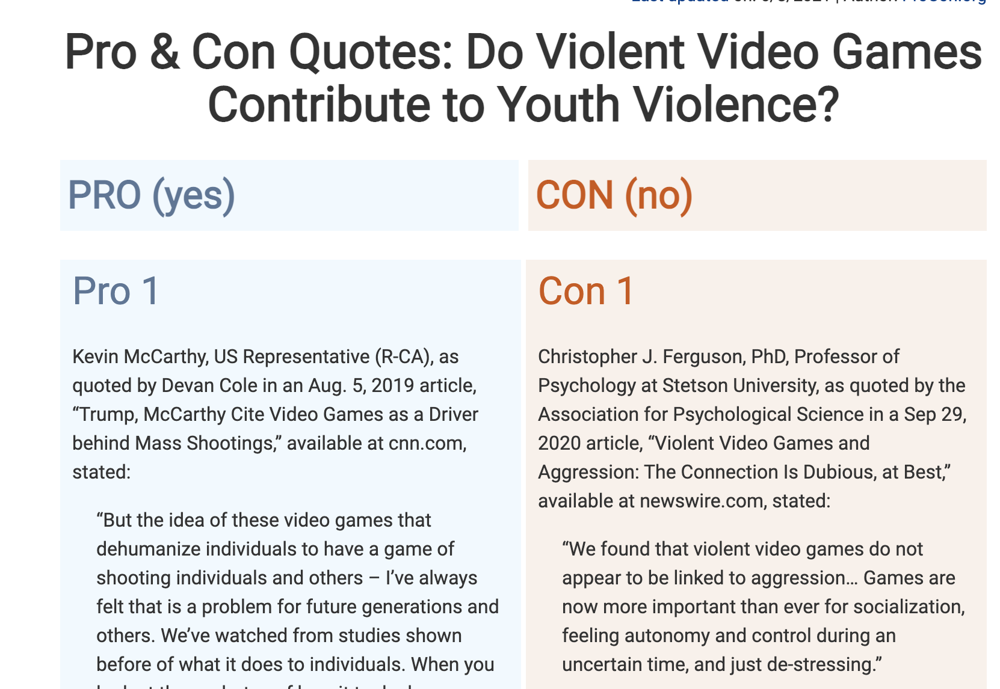
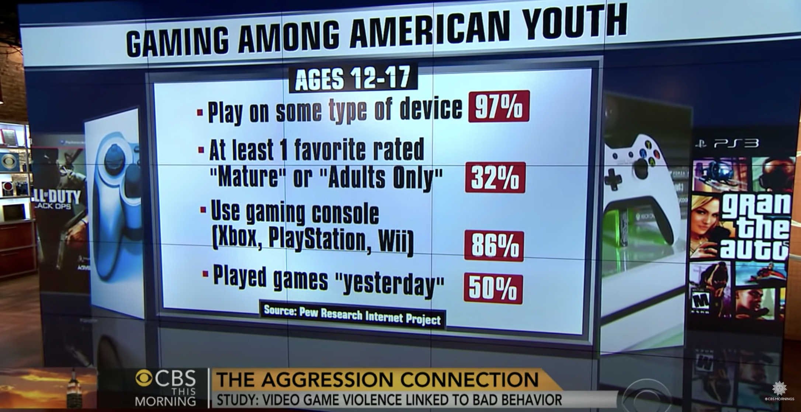

Game Violence Web Quest
Research Resources
-

Little by Little, Violent Video Games Make Us More Aggresive
-

Video Games Violence: Why Do We Like It, And What's It doing To Us?
-

The Government Should Stop Kids From Buying Violent Video Games
-
 Pro & Con Quotes: Do Violent Video Games Contribute to Youth Violence?
-
 Video Games linked to bad behaviour, study says
-

Why Video Games Make You Aggresive
-

Gamers among us are a bad thing
-

Stop talking about violence in games as its everywhere